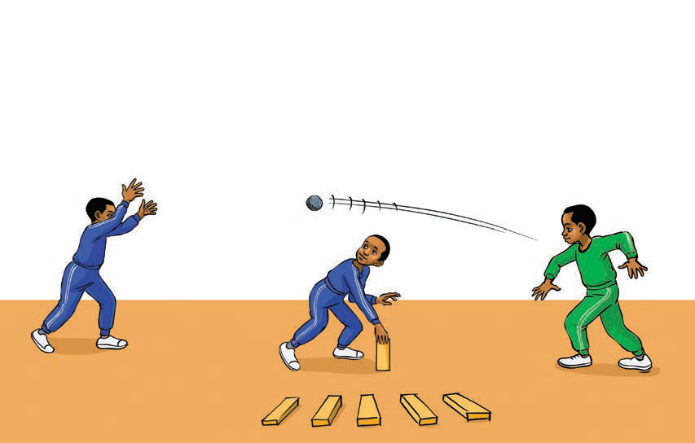

Traditional games
Traditional games are those that have been played for a long time in society. Examples of traditional games are rede, running with a bottle balanced on the head, bao and running with an egg on a spoon.
Rede game
Rede is a ball game played using hands. It is played by both boys and girls. The ball should be small and light. There are different types of rede games, including
- 1. Rede by building towers using tiles or pieces of wood
- 2. Rede by filling a bottle with sand.
Rede by building towers using tiles or pieces of wood
